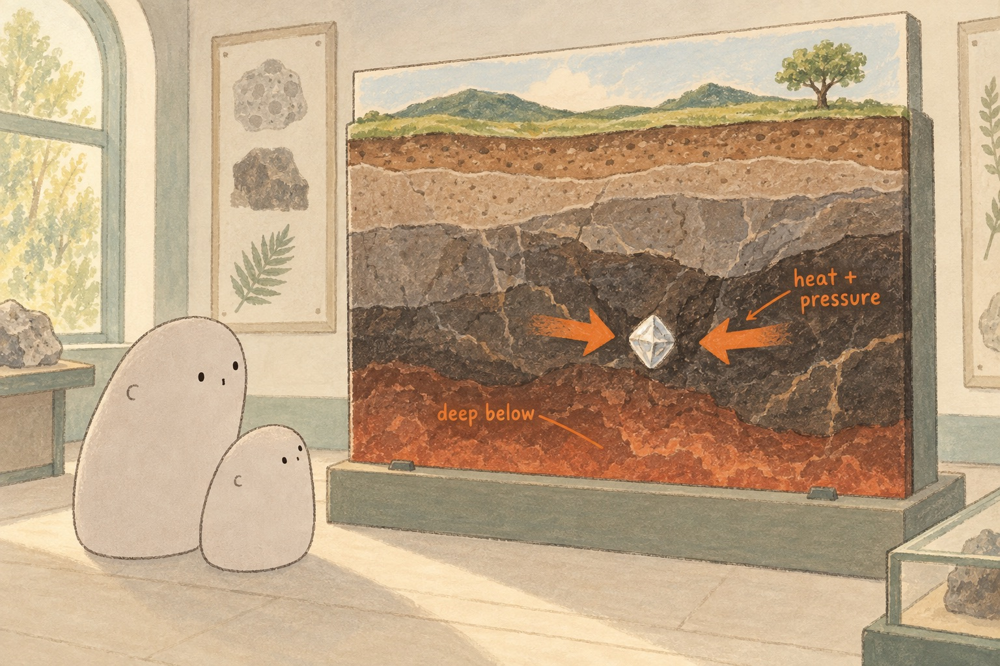

LOOK TOGETHER · 01
How could a diamond begin where sunlight cannot reach?
Find the tiny landscape at the top. How far below it is the pale crystal? What might the inward arrows mean?
A little explanation & something to try
Natural diamonds grow from carbon deep underground, where it is very hot and the pressure is enormous. The arrows stand for that squeeze. Their story stretches far back in Earth's past.
Try together. Trace from the painted tree down to the crystal. Imagine all the rock above it. This model cannot show the real distance.